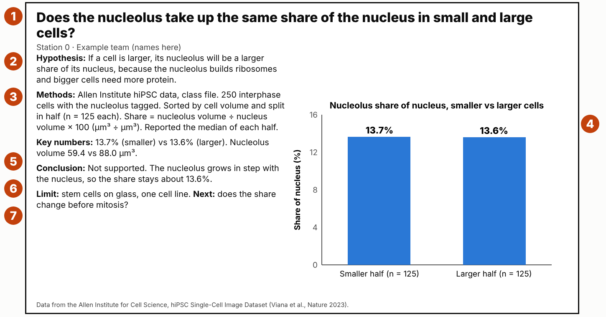

Measuring real human cells
Your team asks one question about human cells and answers it with real measurements from 215,081 living cells. This page walks you through every step. Check off each item as your team finishes it. Your checkmarks save on this device and in this browser, so use the same laptop and browser each time.
Deadlines
Every deadline is for your team unless it says “alone”.
The whole project, in order
Question and hypothesis
A strong question names three things
- What you measure, with a unit (µm³, µm², %, or a ratio).
- Which cells: interphase or a mitosis stage, and which tagged structure.
- What you compare: small vs large cells, edge vs inside, stage vs stage, or two measurements of the same cells.
| Weak | Strong |
|---|---|
| How big are cells? Too broad. Card 5 already shows it. | In interphase cells, is the nucleus a larger share of the cell in small cells than in large cells? |
| What do mitochondria do? A textbook question. The data cannot answer it. | Do interphase cells with a larger volume have a larger total mitochondria volume, and does the mitochondria share of the cell stay the same? |
The parts of a hypothesis
Step 1 checklist
Get only your cells
What the data looks like: one row is one real cell
| A cell_id | B structure_tagged | C cell_volume µm³ | D cell_surface _area µm² | E cell_height µm | F nucleus _volume µm³ | G nucleus_surface _area µm² | H structure _volume µm³ | I on_colony _edge |
|---|---|---|---|---|---|---|---|---|
| 683427 | Nucleolus | 2,221.9 | 1,940.1 | 12.67 | 637.2 | 618.4 | 82.02 | no |
| 956564 | Nucleolus | 1,879.5 | 1,656.8 | 8.77 | 570.7 | 593.9 | 88.02 | no |
| 677277 | Nucleolus | 1,295.0 | 1,180.9 | 8.23 | 377.1 | 429.9 | 55.84 | no |
| … 2,000 rows in the interphase file, one per cell | ||||||||
Four real rows from the class interphase file.
Read row 1 out loud: cell 683427 had its nucleolus tagged. The whole cell was 2,221.9 µm³. Its nucleus was 637.2 µm³. All of its nucleolus added up to 82.02 µm³.
Why you paste into a new tab
How to do it in Google Sheets
- Open the class sheet (interphase cells or cells in mitosis). File → Make a copy. Name it with your station number. Never type in the class file.
- Data → Create a filter. Click the filter button on column B (
structure_tagged), or onstagein the mitosis file. Keep only your structure or stage. - Select the visible rows, including row 1. Copy. Click + at the bottom to add a tab, name it Our cells, and paste in cell A1.
- Make your groups. For small vs large: Data → Sort range (data has a header row), sort by
cell_volume_um3, A → Z. The smallest cell is now on top. Split the rows at the middle. - Write n (the number of cells) for each group. Write every step in your methods log.
Checkpoint A checklist
Key numbers
Share: compare parts fairly
A big cell has more of almost everything. To ask whether a structure takes up the same share of the cell, divide the part by the whole.
share (%) = part ÷ whole × 100
| You want | Type in row 2, then drag down |
|---|---|
| Structure share of the cell | =H2/C2*100 |
| Structure share of the nucleus | =H2/F2*100 |
| Nucleus share of the cell | =F2/C2*100 |
| SA:V (surface area ÷ volume) | =D2/C2 |
Median of a group
=MEDIAN(J2:J126) gives the middle value of rows 2 to 126. Change the column and rows to match your group.
Why the median? Half the cells are above it and half below. A few giant or tiny cells do not pull it the way they pull an average.
The most common mistake: comparing totals instead of shares
Checkpoint B checklist
One graph
Pick the graph that answers your question
Ask: am I comparing groups, or relating two measurements of the same cells?
Full credit vs lost points
Make it in Google Sheets
- Put your group names in one column and their medians in the next column (for a bar graph). For a scatter plot, use your two measurement columns.
- Select those cells. Insert → Chart.
- In the Chart editor, set Chart type to Column chart (group medians) or Scatter chart (two measurements).
- Customize → Chart and axis titles. Add the chart title, then the horizontal and vertical axis titles, each with a unit.
- Customize → Vertical axis: set Min to 0.
- Put n in the group names (for example
Smaller half (n = 125)) so it shows under each bar.
Checkpoint C checklist
Result sentence
Checkpoint D checklist
Conclusion, limit and next question
Our hypothesis was not supported. The nucleolus takes up about the same share of the nucleus in small and large cells.
Median share 13.7% in the smaller half (n = 125) and 13.6% in the larger half (n = 125).
The nucleolus builds the parts of ribosomes. It seems to grow in step with the nucleus, so the share stays about the same even though larger cells have more nucleolus in total.
Limit: stem cells grown on glass, one cell line. Next question: does the share change just before mitosis?
Reasoning must use a cell-biology idea
Pick the idea that fits from the concept cards: the membrane and SA:V, an organelle's job, energy (ATP), or the cell cycle. Say why the numbers came out the way they did.
A trend does not prove a cause. If bigger cells have more mitochondria, that does not show mitochondria make cells grow.
Real limits of these data
- Stem cells grown flat on glass, not cells inside a body.
- One cell line, from one person.
- Light-microscope measurements, made by a computer from images.
- Each cell was measured once, so we cannot watch one cell grow.
- Small n for some groups (for example colony-edge cells).
Checkpoints E and F checklist
The poster slide
Start from the poster slide template (File → Make a copy). The graph gets the biggest box.
A finished example

Poster slide checklist
The 4-minute talk
Who says what
| Speaker | Says |
|---|---|
| 1 | The question, and why it matters for cells. The hypothesis with “because”. |
| 2 | Methods: where the data came from, which cells, n, how you calculated. |
| 3 | The graph: read the axes first, then point to the key numbers. |
| 4 (or 1) | Conclusion, the cell-biology reason, one limit, the next question. |
Be ready for these questions
- How many cells were in each group?
- Why did you use the median?
- Could something other than cell size explain your result?
- Would you expect the same result in a muscle cell or a neuron?
- What would you do next with more time?
Talk checklist
Your individual paragraph
- How the data were collected: human stem cells, one structure made to glow, imaged in 3D with a microscope, measured by a computer.
- What your team did: which cells, how many, what you calculated.
- What the result means for how cells work.
- One thing you would change if you did the project again, and why.
Paragraph checklist
Concept cards for your “because”
Your hypothesis and your reasoning must use one of these ideas, in your own words.
Surface area to volume (SA:V)
Everything a cell takes in or gets rid of crosses its membrane. When a shape grows, its volume grows faster than its surface. So a bigger cell has less membrane for each µm³ inside it.
Share vs total
Share = part ÷ whole × 100. A big cell can have more of a structure (bigger total) and still the same share, if the structure grew as fast as the cell. When you compare cells of different sizes, compare shares. A total only tells you about size.
Nucleus and nucleolus
The nucleus holds the cell's DNA: one full set of instructions. The nucleolus, inside the nucleus, builds the parts of ribosomes. Ribosomes build proteins.
Mitochondria and energy
Mitochondria make ATP, the cell's energy molecule. A cell spends ATP on building molecules, moving things inside the cell, and running membrane pumps such as the sodium-potassium pump (Block 2.5). More work means more ATP needed.
The protein factory (ER, Golgi, lysosomes)
The ER builds proteins and new membrane. The Golgi sorts, packages and ships them. Lysosomes break down worn-out parts and food and recycle them (Block 2.2). A bigger cell has more volume to build, supply and clean up.
The cell cycle
Interphase: the cell grows and copies its DNA, so it gets bigger before it divides. Mitosis: the nuclear envelope breaks down, and the copied chromosomes line up and separate. The DNA packs very tightly. Cytokinesis: the cell splits into two daughter cells.
Colony edge vs inside
These cells grow packed together in colonies on glass. A cell on the edge has open space on one side; a cell inside is squeezed by neighbors on every side. The data do not say why edge cells differ, so your “because” must be a reasoned guess.
Trend is not cause
If bigger cells have more mitochondria, that does not show that mitochondria make cells grow. Both could rise for a third reason. Your hypothesis predicts a pattern; it cannot prove a cause.
Data files and Google Sheets moves
The two class files
- Interphase cells: 2,000 cells, 250 to 400 for each of 8 tagged structures. Use this file unless your question is about mitosis.
- Cells in mitosis: 510 cells, 85 at each of 6 stages. In this file,
nucleus_volume_um3is the volume of the DNA. - Cell Feature Explorer (website): explore all the cells and see any cell in 3D. Good for screenshots. Use the class files for medians and ratios.
Columns
| Column | Meaning |
|---|---|
structure_tagged | Which cell structure glows in this cell |
cell_volume_um3 | Size of the whole cell (µm³) |
cell_surface_area_um2 | Area of the cell membrane (µm²) |
cell_height_um | Height from the glass to the top of the cell (µm) |
nucleus_volume_um3 | Size of the nucleus (µm³) |
nucleus_surface_area_um2 | Area of the nuclear envelope (µm²) |
structure_volume_um3 | Total volume of the tagged structure in that cell (µm³) |
on_colony_edge | yes if the cell sits on the edge of its colony |
stage (mitosis file) | Interphase or the mitosis stage the cell was caught in |
Sheets moves
| To do this | Do this |
|---|---|
| Your own copy | File → Make a copy |
| Show only your cells | Data → Create a filter → filter button on column B (or stage) |
| Keep only those cells | Copy the visible rows → new tab (+) → paste in A1 |
| Smallest to largest | Data → Sort range → by cell_volume_um3, A → Z |
| Ratio column | =H2/C2*100, then drag the small blue square in the corner down |
| Median of a group | =MEDIAN(J2:J126) |
| Graph | Select → Insert → Chart → Column or Scatter → Customize → titles; vertical axis Min = 0 |
Data rules
- Use interphase cells unless your question is about mitosis.
- At least 100 cells in each group. Report the median and n.
- Write down every step so another team could repeat it.
Rubric (40 points)
| Part | Full credit looks like this | Points |
|---|---|---|
| Question and hypothesis | The question can be answered with this dataset. It names what is measured, in which cells, and what is compared. The hypothesis gives a reason from cell biology (“because …”). | 6 |
| Methods | Names the data source, which cells were used (stage, tagged structure), how many cells (n), the units, and how the key numbers were calculated (for example a median or a ratio). | 5 |
| Graph | Right type of graph for the question. Both axes labeled with units. Title. n shown. Readable on the TV from the back of the room. | 8 |
| Results | At least two specific numbers with units that answer the question. The trend is described accurately. | 6 |
| Conclusion and reasoning | States whether the hypothesis was supported. Explains the result with cell biology: membrane, organelles, energy or the cell cycle. | 7 |
| Limits and next question | One real limit of the data and one next question. | 3 |
| Talk | About 4 minutes. Every member speaks. Answers a question with evidence. | 2 |
| Individual paragraph | Written alone: how the data were collected, what you did, what the result means, one thing you would change. | 3 |
| Total | 40 | |
Key terms
- Stem cell
- A cell that can still turn into many kinds of cells. These are human iPS cells: adult cells reprogrammed in a lab to act like stem cells.
- µm (micrometer)
- One-thousandth of a millimeter. µm³ measures volume. µm² measures area.
- Interphase / mitosis
- Interphase is the part of a cell's life when it is not dividing. Mitosis is when the nucleus divides (prophase, prometaphase, metaphase, anaphase, telophase).
- Tagged structure
- The one cell part made to glow in that batch of cells, so a computer could measure it.
- Median
- The middle value when all the values are put in order. Half the cells are above it and half are below.
- n
- The number of cells in a group. Always report it.
- SA:V ratio
- Surface area divided by volume: how much membrane a cell has for each µm³ inside it.
- Share
- Part ÷ whole × 100. What percent of the cell (or nucleus) one structure takes up.
- Independent variable
- What you compare or group by (for example cell size group).
- Dependent variable
- What you measure in each group (for example nucleolus share, %).
Data: Allen Institute for Cell Science, hiPSC Single-Cell Image Dataset (Viana et al., Nature, 2023). Each measurement is one living human stem cell imaged in 3D with a microscope.
Your saved progress
Checkmarks are saved only in this browser on this device. They are not sent to anyone. If you switch laptops or clear your browser history, they will be gone. Your teacher still initials each checkpoint on paper.